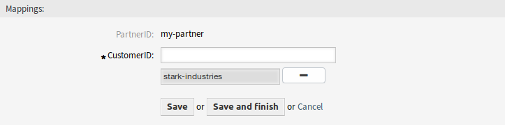

PartnerID ↔ CustomerID¶
使用此屏幕可管理合作伙伴和客户之间的映射。管理屏幕位于 杂项 组的 PartnerID ↔ CustomerID 模块中。

管理 PartnerID ↔ CustomerID 关联屏幕
管理 PartnerID ↔ CustomerID 关联¶
注解
必须在系统配置中设置LDAP服务器配置。
若要设置LDAP服务器配置：
- 转到 系统配置 屏幕。
- 在 导航 小部件中选择 OTRSRestrictCustomerDataView。
- 在导航树中导航到 Core→LDAP。
- 设置LDAP连接的参数。
如果可以访问LDAP服务器，则从LDAP服务器中提取的 partner_id` 与 customer_id 的关系将存储在系统配置中 PartnerIDMapping 部分配置的数据库表中。
若要查看 PartnerIDMapping 设置：
- 转到 系统配置 屏幕。
- 在 导航 小部件中选择 OTRSRestrictCustomerDataView。
- 导航到导航树中的 Core→PartnerIDMapping。
- 查看该设置。
根据映射表中存储的关系，对于在数据库中具有合作伙伴ID和关系的服务人员，对某些客户的数据的访问将受到限制。这些服务人员只能看到数据库中允许具有客户ID的客户。
如果数据库中存储了服务人员的合作伙伴ID，但未分配相关的客户ID，则服务人员将无法查看任何客户信息。没有给定合作伙伴ID的服务人员仍然可以看到每个客户数据。
如果LDAP服务器配置和合作伙伴ID映射设置正确，则可以继续管理屏幕。
若要创建一个新的映射：
- 单击左侧边栏中的 添加映射 按钮。
- 在第一个字段中添加合作伙伴ID。
- 将客户添加到第二个字段中。刚开始输入，该字段有自动完成支持。添加的客户ID将显示在文本字段下面。
- 点击 保存 按钮。

添加映射屏幕
若要编辑一个映射：
- 点击映射列表中的一个映射。
- 添加或删除客户。
- 点击 保存 或 保存并完成 按钮。

编辑映射屏幕
PartnerID 字段是只读的。如果要编辑合作伙伴ID，可以删除映射并使用其他合作伙伴ID创建新映射。
若要删除一个映射：
- 点击概览表最后一列的垃圾桶图标。
- 点击确认对话框中的 确认 按钮。

删除映射屏幕
注解
如果系统中添加了多个映射，则只需键入要筛选的名称，即可使用筛选框查找特定映射。
映射设置¶
添加或编辑此资源时，可以使用以下设置。 标有星号的字段是必填字段。
- PartnerID *
- 存储在LDAP中的合作伙伴的ID。
- CustomerID *
- 存储在OTRS数据库中的客户的内部ID。